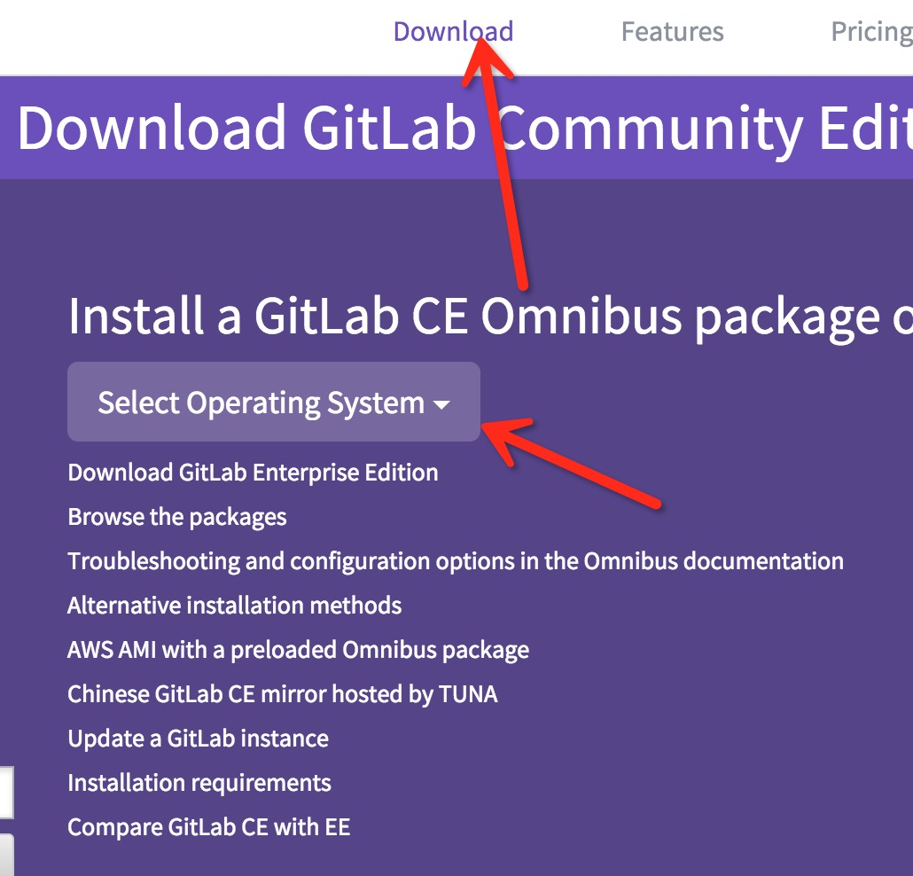

gitLab官网安装
服务器搭建
◆ 官网安装地址（gitLab官网地址）
官网地址https://about.gitlab.com/downloads/
国内地址http://www.gitlab.cc/downloads/
- 选择安装gitLab的系统
 安装官网描述在所在环境中执行指定命令。（eg：Centos 6 and 7）
1
2
3
4
5
6
7
8sudo yum install curl policycoreutils openssh-server openssh-clients
sudo systemctl enable sshd
sudo systemctl start sshd
sudo yum install postfix
sudo systemctl enable postfix
sudo systemctl start postfix
sudo firewall-cmd --permanent --add-service=http
sudo systemctl reload firewalld若是你能连接外网(访问国外网站-翻墙)
1
2curl -sS https://packages.gitlab.com/install/repositories/gitlab/gitlab-ce/script.rpm.sh | sudo bash
sudo yum install gitlab-ce若是你不能连接外网
请下载rpm包gitlab-ce-8.7.0-ce.0.el6.x86_64.rpm
运行代码如下：1
2rpm -i gitlab-ce-8.7.0-ce.0.el6.x86_64.rpm
sudo gitlab-ctl reconfigure访问服务机地址(ip地址，默认端口是80)
- 常用命令说明
1
2
3重启配置:sudo gitlab-ctl reconfigure
重启服务:sudo gitlab-ctl stop/start
查看日志:gitlab-ctl tail
gitLab配置
◆ gitLab基本配置都集中在/etc/gitlab/gitlab.rb（gitLab集中配置）1
2请先配置如下来指定服务挂在的服务机地址
external_url 'http://ip'
gitLab邮件配置
配置SMTP发送邮件配置，使用163邮箱。1
2
3
4
5
6
7
8
9
10
11
12
13
14注释###163 exmail
注释#Sending application email via SMTP#
gitlab_rails['smtp_enable'] = true
gitlab_rails['smtp_address'] = "smtp.163.com"
gitlab_rails['smtp_port'] = 25
gitlab_rails['smtp_user_name'] = "发件箱@163.com"
gitlab_rails['smtp_password'] = "发件箱账号"
gitlab_rails['smtp_domain'] = "163.com"
gitlab_rails['smtp_authentication'] = :login
gitlab_rails['smtp_enable_starttls_auto'] = true
注释#
注释###修改gitlab配置的发信人
gitlab_rails['gitlab_email_from'] = "发件箱@163.com"
user["git_user_email"] = "发件箱@163.com"
gitlab使用postgresql数据库的一些说明
重启数据库
1
gitlab-ctl restart postgresql
数据库配置修改
配置地址 /var/opt/gitlab/postgresql/data- vim postgresql.conf 修改后需要重启
1
2
3
4
5注释# 修改监听地址为ip，*表示全部IP都可以进入数据库
（有账号就需要账号验证，无账号就可以直接连接进来）
listen_addresses = '*'
port = 5432 注释# 监听端口
max_connections = 200 # (change requires restart)
- vim pg_hba.conf 连接数据库的配置
- host all all 192.168.1.0/24 trust 添加这行，192.168.1.0/24这个段的ip地址不需要密码可以连接
在维护 PostgreSQL 库时，有两个配置文件修改的情况比较多，第一是认证文件 pg_hba.conf，另一个是配置文件 postgresql.conf。
其中 pg_hba.conf 的更改更频繁些，因为业务服务器经常出现调整，或增加应用服务器，此时需要增加 pg_hba.conf 的 IP 签权信息，因为目前我们的生产库对 IP 实行严格控制，只有指定的 IP 权限才被开放，下面是一个生产库的 pg_hba.conf 文件。
1 | 注释# TYPE DATABASE USER CIDR-ADDRESS METHOD |
备注：前三行的认证策略为 reject ，表示不允许任何远程的连接连接系统库，之后才是应用服务器的IP 列表，没列入文件的 IP 将不允许连接，这就是常见的 “no pg_hba.conf entry” 错误。
“no pg_hba.conf entry” 错误
备注：更多的时候，有时不小心在配置文件 pg_hba.conf 增加了非法字符，也不会报错，但会带来问题。
gitLab开源组织bitnami安装
- bitnami安装说明文档
gitLab升级篇
- 下载最新安装包【根据不同系统下载对应的安装包】
- 备份gitLab升级有风险，备份有必要
停止unicorn、sidekiq：
1
2
3gitlab-ctl stop unicorn
gitlab-ctl stop sidekiq
gitlab-ctl stop nginx
◆ 创建数据备份，防止更新失败
1 | > gitlab-rake gitlab:backup:create |
使用以上命令会在/var/opt/gitlab/backups目录下创建一个名称类似为
1393513186_gitlab_backup.tar的压缩包, 这个压缩包就是Gitlab整个的完整部分, 其中开头的
1393513186是备份创建的日期.
◆ Gitlab 修改备份文件默认目录
你也可以通过修改/etc/gitlab/gitlab.rb来修改默认存放备份文件的目录:
1 | gitlab_rails['backup_path'] = '/mnt/backups' |
/mnt/backups修改为你想存放备份的目录即可, 修改完成之后使用gitlab-ctl reconfigure命令重载配置文件即可.
◆ Gitlab 自动备份也可以通过crontab使用备份命令实现自动备份:
1 | sudo su - |
加入以下, 实现每天凌晨2点进行一次自动备份:
1 | 0 2 * * * /opt/gitlab/bin/gitlab-rake gitlab:backup:create |
◆ Gitlab 恢复同样, Gitlab的从备份恢复也非常简单:
1 | 注释# 停止相关数据连接服务 |
◆ Gitlab迁移
迁移如同备份与恢复的步骤一样, 只需要将老服务器/var/opt/gitlab/backups目录下的备份文件拷贝
到新服务器上的/var/opt/gitlab/backups即可(如果你没修改过默认备份目录的话). 但是需要注意的
是新服务器上的Gitlab的版本必须与创建备份时的Gitlab版本号相同. 比如新服务器安装的是最新的
7.60版本的Gitlab, 那么迁移之前, 最好将老服务器的Gitlab 升级为7.60在进行备份.
◆ 其他
最新版本的Gitlab已经修复了HTTPS设备的BUG, 现在使用官方HTTPS配置即可轻松启用HTTPS.
- 安装升级包
1 | rpm -Uvh gitlab-7.4.2_omnibus-1.el6.x86_64.rpm |
- 重新加载配置
1 | gitlab-ctl reconfigure |
5.重启Gitlab服务
1 | gitlab-ctl restart |
6.查看当前gitlab版本
1 | cat /opt/gitlab/embedded/service/gitlab-rails/VERSION |


 ，如图中所圈示。
，如图中所圈示。